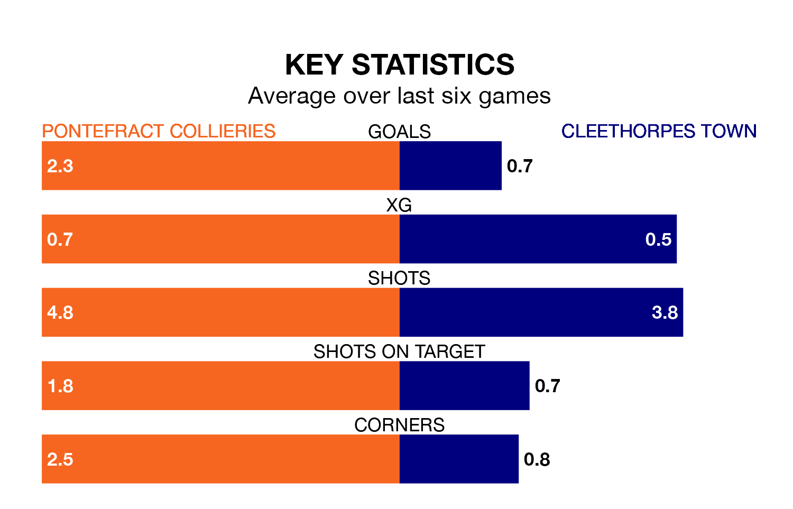

Two of the Northern Premier League Division One East's meanest defences go head-to-head on Saturday, when Cleethorpes Town visit Pontefract Collieries.
Only two sides – Stockton Town FC and Dunston UTS – have conceded fewer goals than Cleethorpes to date: the away side have let in just 19 goals in 17 games.
Pontefract Collieries have conceded 20 goals in 17 games, giving them the fourth tightest back line so far this season.
Pontefract Collieries are in fantastic form in the Northern Premier League Division One East, with five wins and one loss from their last six games.
With no wins and three draws over that period, Cleethorpes's form is much worse – they have taken three points from 18, compared to the hosts' 15.
Pontefract Collieries are fifth in the table after 17 games, of which they have won 10 and drawn three, earning 33 points.
Town are nine places behind Pontefract Collieries in 14th, with five wins and six draws putting them on 21 points.
Over the last year, Pontefract Collieries and Cleethorpes have played each other twice. Pontefract Collieries won one of them and they drew the other.
Their last meeting was on August 26, when Pontefract Collieries won 1-0 away.
Pontefract Collieries' last match was on December 30, a 4-0 win against Ossett United.
Cleethorpes lost 1-0 against Grimsby Borough last time out, on December 26.
Updated: 10:36, 03/01/24